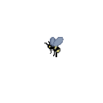
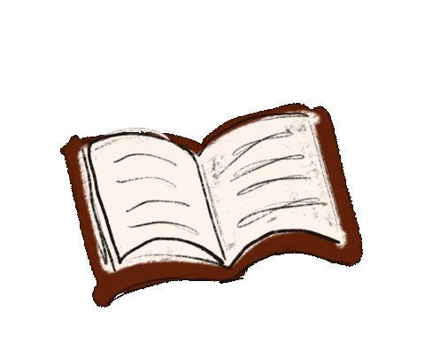

Bienaventurado el que no cambia el sueño de su vida por el pan de cada día
Textos y Poesía
Explora el mundo de las palabras
Descubre la belleza de la poesía clásica y contemporánea.
Visita mi blog personal
Imagen
Autor
Obra Destacada
Enlace

Pablo Neruda
20 Poemas de Amor y una Canción Desesperada
Leer más
Gabriela Mistral
Sonetos de la Muerte
Leer más
Octavio Paz
El Laberinto de la Soledad
Leer más
Sor Juana Inés de la Cruz
Redondillas
Leer más